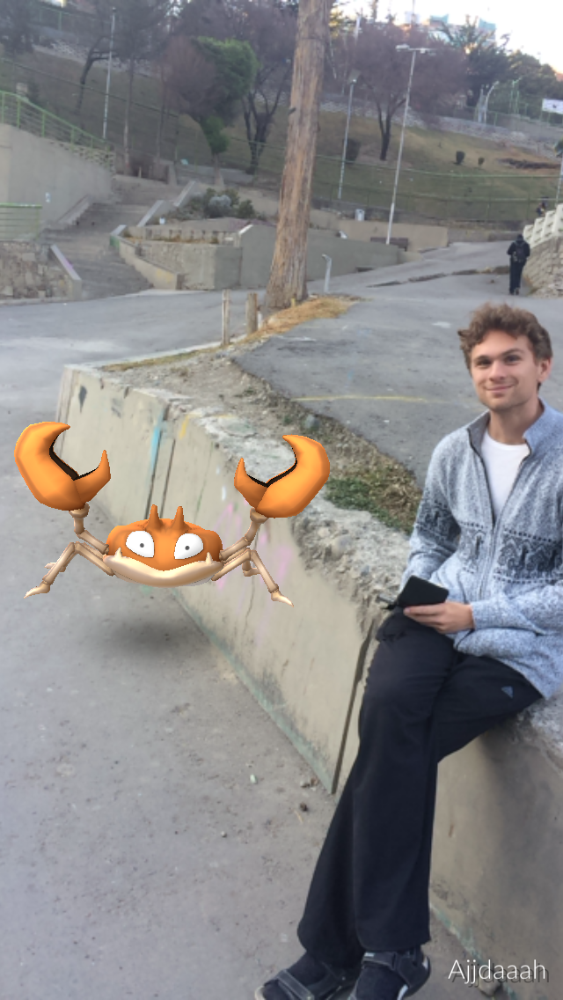

Fira sig nedför vattenfall och La Paz
Det har gått ett tag sedan sist, då vi var i aphimlen. Vi stannade där ett par dagar till innan vi skulle ta oss till La Paz. Dagen innan vi skulle åka pratade ägaren med oss och berättade att ett turistföretag i närheten skulle filmas och behövde frivilliga för deras "canyoning", och om vi ville göra det innan vi åkte till La Paz.
Sagt och gjort så nästa dag tog vi våra väskor och åkte in till den närmaste staden Coroico där vi blev upphämtade av två killar. Vi åkte en bit ut i bergen och vandrade en bit, innan vi stannade för att börja klä på oss. Här visade det sig att vi skulle ha våtdräkter, något vi inte alls varit beredda på. vi skulle fira ned oss med rep (repell på engelska) nedför ett par vattenfall i bergen, och skulle bli blöta.

Snygg outfit va? Det var första gången för oss båda men det gick bra och var kul. Det hela avslutades med en mindre rolig superbrant klättring uppför - jobbigt!

Efter äventyret blev vi tillbakaskjutsade till Coroico varifrån vi tog en minibuss (proppfull) ett par timmar till La Paz.
Här i La Paz har vi bott i en riktigt schysst och ganska stor 3a, nice! La Paz har inte så väldigt många sevärdheter har vi upptäckt. Däremot, har vi upptäckt, att det finns pokemon (och jag har fixat kontantkort så vi har mobilt internet - 4g!).
Ja, ja, inte ska man väl gå och spela mobilspel på semestern. Men vi var ju tvungna att kolla vad hypen handlade om, och det var ju så kul! Så vi har gått runt och upptäckt både stan och jagat pokemon ett par dagar. Kul, faktiskt! Vi har kollat in en av stadens things-to-do, Witches Market, vilket visade sig vara ett gäng stånd ganska lika de vi hittat i Cusco, fast ibland med lite läskiga tillägg..

Idag är vår sista dag här och vi har spenderat den med att åka runt i den roliga kommunala transporten de har här, linbana! Det går flera långa linbanelinjer högt ovanför stan. Fint!

Nu väntar en natt till och i morgon flyger vi till Lima, den sista destinationen på vår resa! Vi vet inte riktigt vad vi ska göra i Lima än, men vi får se! Vi längtar i alla fall lite efter den peruanska maten, för den bolivianska har inte varit någon höjdare.

skrivet av Max